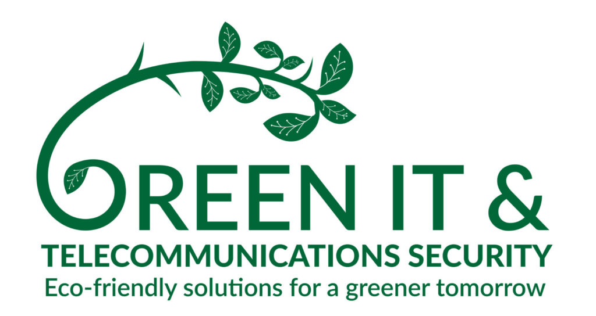

Što je Green IT?
Definicija održivog računalstva
Green IT (Zeleno računalstvo) podrazumijeva ekološki održivo korištenje računala i resursa. To uključuje dizajn, proizvodnju, uporabu i odlaganje uređaja s minimalnim utjecajem na okoliš.
Ima za cilj minimizirati negativne učinke IT operacija na okoliš dizajniranjem, proizvodnjom, radom i odlaganjem poslužitelja, osobnih računala i drugih računalnih proizvoda na ekološki prihvatljiv način.
Motivi iza zelenih IT praksi uključuju smanjenje upotrebe opasnih materijala, maksimiziranje energetske učinkovitosti tijekom životnog vijeka proizvoda i promicanje biorazgradivosti nekorištenih i zastarjelih proizvoda.
Koncept zelenog IT-a pojavio se 1992. godine kada je Američka agencija za zaštitu okoliša (EPA) pokrenula Energy Star, dobrovoljni program označavanja koji identificira proizvode koji nude vrhunsku energetsku učinkovitost.
Organizacije i potrošači koji koriste IT proizvode s oznakom Energy Star mogu uštedjeti novac i smanjiti emisije stakleničkih plinova. EPA je kasnije financirala i razvoj standarda Electronic Product Environmental Assessment Tool i pratećeg registra proizvoda, koji IT kupci mogu koristiti za pronalaženje "ekološki poželjnijih" tehnologija.

Ključni ciljevi su smanjenje potrošnje energije u podatkovnim centrima, virtualizacija servera i pravilno recikliranje elektroničkog otpada (e-otpad). Korištenjem obnovljivih izvora energije, IT sektor može značajno smanjiti svoj ugljični otisak.